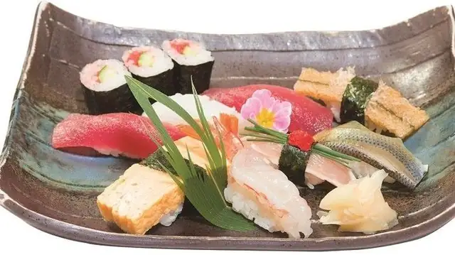
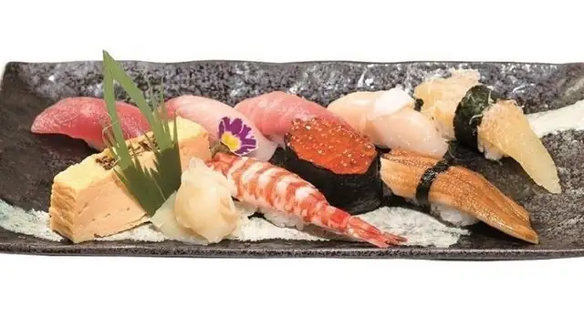
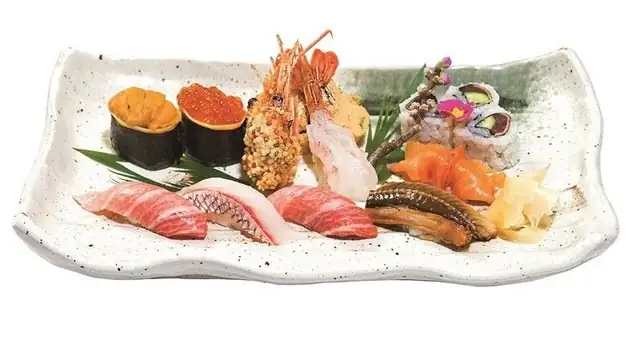
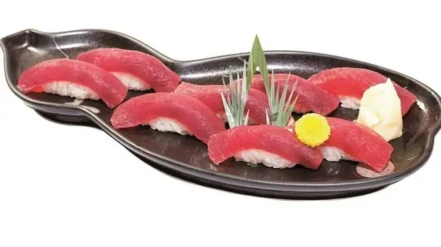
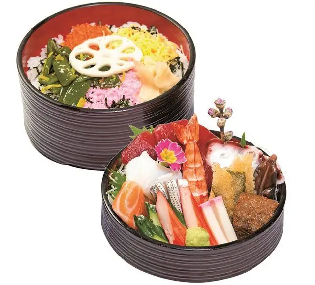
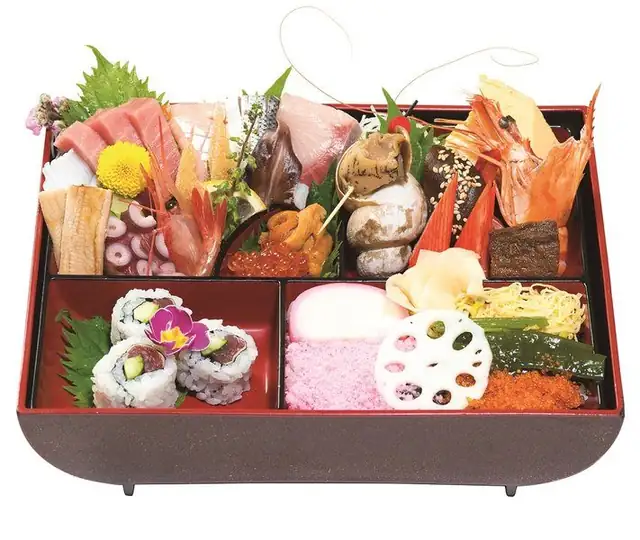
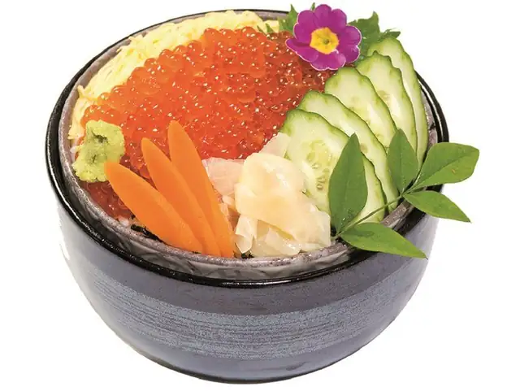
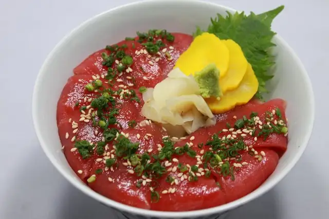
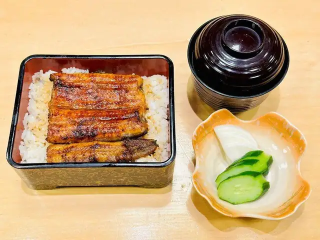
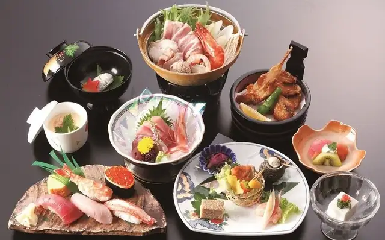

Hama Nigiri
浜にぎり · hama nigiri
Chef's selection of nigiri
¥2,000
MENU
All prices include tax. Please point to the dish when ordering.

浜にぎり · hama nigiri
Chef's selection of nigiri
¥2,000

百寿 · hyakuju
Nigiri set
¥2,500

千寿 · senju
Nigiri set
¥3,600

嘉寿 · kaju
Premium nigiri set
¥4,500

マグロ寿司 · maguro zushi
Nigiri topped with tuna
¥2,700

中トロ寿司 · chūtoro zushi
Rich, marbled tuna belly
¥4,500

浜ちらし · hama chirashi
Assorted sashimi over sushi rice
¥2,000

古都ちらし · koto chirashi
Premium assorted sashimi over sushi rice
¥3,800

海鮮丼 · kaisen-don
Assorted seafood over rice
¥3,000

イクラ丼 · ikura-don
Salmon roe over rice
¥3,000

中とろ鉄火丼 · chūtoro tekka-don
Medium fatty tuna over sushi rice
¥5,000

うな重（竹） · unajū take
Grilled eel on rice
¥2,500

うな重（松） · unajū matsu
Grilled eel on rice, larger portion
¥4,500

寿司会席 · sushi kaiseki
Course dishes: to be added.

コース · kōsu
Course dishes: to be added.